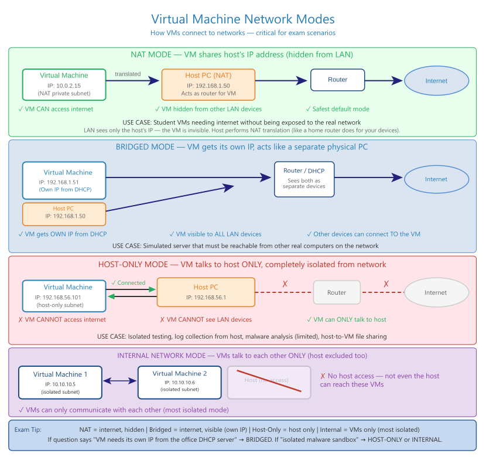

Hypervisors, VM resource allocation, snapshots vs. clones, and cloud service/deployment models for the CompTIA A+ 220-1200 exam

Type 1 vs. Type 2 hypervisor architecture
| Feature | Type 1 (Bare Metal) | Type 2 (Hosted) |
|---|---|---|
| Architecture | Runs directly on hardware, no host OS | Runs on top of a host OS |
| Best for | Enterprise / server environments (most efficient) | Students & labs (easiest to install) |
| Examples | VMware ESXi, Hyper-V Server, Xen, KVM | VMware Workstation, VirtualBox, Parallels Desktop |
VDI (Virtual Desktop Infrastructure): hosts desktop OSes as VMs on a central server, streaming the desktop to thin clients — centralizes management since the OS/data never live on the endpoint.
| Resource | Configure | Key Consideration |
|---|---|---|
| CPU (vCPU) | Virtual cores assigned | Never exceed host's physical cores — most lab VMs run fine with 1–2 vCPUs |
| RAM | Host RAM reserved for the VM | A VM using 75% of host RAM causes the host to page to disk |
| Storage | Dynamically allocated vs. Fixed size | Dynamic saves space; fixed gives better performance |
| Network Adapter | NAT, Bridged, Host-only, Internal | Can be changed after creation |
| Display / VRAM | Video memory for the VM | Increase for GUI-heavy guest OSes; minimal for CLI-only |
| Feature | Snapshot | Clone |
|---|---|---|
| What it does | Captures VM state at a point in time | Creates a complete independent copy |
| Use case | Revert instantly if a change breaks something | Deploy multiple identical VMs from a baseline |
| Speed / Storage | Fast, small (records only changes) | Slower, large (full disk copy) |
| Dependency | Depends on the snapshot chain — too many degrade performance | Fully independent of the original |
| Mode | Description | Use Case |
|---|---|---|
| NAT | VM shares the host's IP via translation | Safest, easiest setup |
| Bridged | VM gets its own IP from the network | Servers or lab networks |
| Host-only | VM communicates only with the host | Secure, isolated labs |
| Internal | VMs communicate only with each other | Multi-VM simulations |
| Model | Meaning | Examples |
|---|---|---|
| SaaS | Software delivered fully online | Microsoft 365, Gmail, Salesforce |
| PaaS | Platform for building applications | Azure App Service, Google App Engine |
| IaaS | Virtual machines & storage | AWS EC2, Azure VMs |
| Model | Description |
|---|---|
| Public | Shared infrastructure managed by providers (AWS, Azure, GCP) |
| Private | Organization-owned cloud infrastructure |
| Hybrid | Mix of public + private cloud |
| Community | Shared by similar organizations (e.g., government agencies) |
| Responsibility | On-Prem | IaaS | PaaS | SaaS |
|---|---|---|---|---|
| Datacenter & hardware | Customer | Provider | Provider | Provider |
| Network infrastructure | Customer | Provider | Provider | Provider |
| Hypervisor | Customer | Provider | Provider | Provider |
| Operating system | Customer | Customer | Provider | Provider |
| Runtime & middleware | Customer | Customer | Provider | Provider |
| Application | Customer | Customer | Customer | Provider |
| Data & access management | Customer | Customer | Customer | Customer |
Key insight: the customer always owns their data and identity/access management, regardless of service model.
Snapshots are NOT backups — a snapshot lives on the same physical disk as the VM, so a disk failure destroys both. "The cloud provider is responsible for everything" is never correct — even in SaaS, the customer owns their data and compliance obligations (HIPAA, GDPR, etc.).
This cheat sheet is from the CompTIA A+ 220-1200 Series Complete Study Guide. Learn More About the Book →